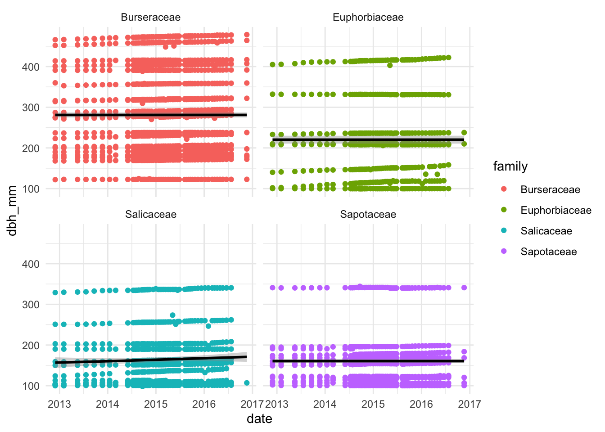
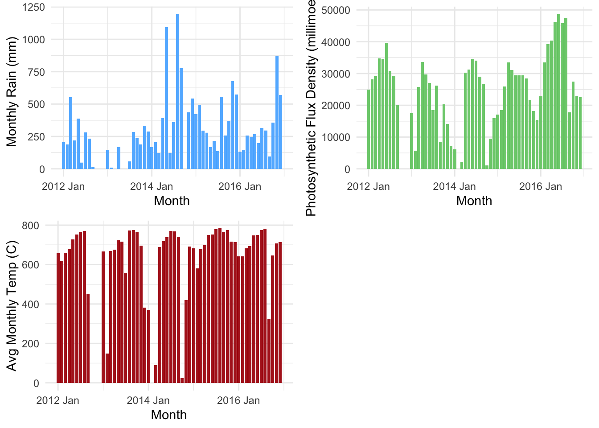
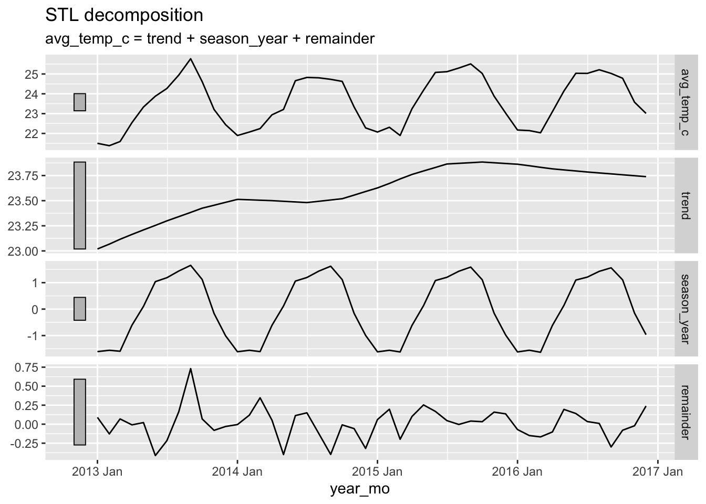

View Code
# data processing
library(tidyverse)
library(here)
library(janitor)
library(lubridate)
library(zoo)
# plotting/aesthetics
library(sjPlot)
# time series packages
library(feasts)
library(tsibble)
library(dynlm)The data collected spans the years 2012-2016 and measures tree diameter at breast height. During this time, there was a drought. My statistical analysis will evaluate 4 of the most commonly sampled tree species (maybe families) to see which fared better during the drought. I have added climate data to test for potential omitted variables bias. After creating the linear model, I’ll conduct a time series analysis to view the seasonality and trends in growth. Since the drought was over this entire period of time, it’s possible there will be a slow in growth for all species as the drought continues.
Load Libraries
# data processing
library(tidyverse)
library(here)
library(janitor)
library(lubridate)
library(zoo)
# plotting/aesthetics
library(sjPlot)
# time series packages
library(feasts)
library(tsibble)
library(dynlm)Read in Data
# load tree data
dbh_raw <- read_csv(here('data/long.data.DBH.csv'))
# read in hourly clim data
clim_1999_2014 <- read_csv(here("data/NADPTowerHourlyData1999_2014.csv")) %>% clean_names()
clim_2015_2023 <- read_csv(here('data/NADPTowerHourlyData2015_2023v2.csv')) %>% clean_names()Dates are originally in Julian day and year, so these need to be converted to a date columm with the proper data type. I got the top 4 sampled tree species and added columns for family and whether global distribution (distribution) is wide or narrow. I’m going to compare the four species, and see if families with a wider distribution (not centered around the equator) grow faster during droughts
# clean tree species data
species_list <- c('DACEXC', 'MANBID', 'CASARB', 'INGLAU')
dbh <- dbh_raw %>%
mutate(date = as.Date(paste(year, doy, sep="-"),"%Y-%j")) %>%
rename(dbh_mm = dbh) %>%
filter(species %in% species_list) %>%
select(-c('doy', 'year','flag')) %>%
group_by(date,species) %>%
mutate(mean_daily_dbh = mean(dbh_mm, na.rm = TRUE),
year_mo = yearmonth(date)) %>%
ungroup() %>%
filter(date(date) >= "2014-06-01" &
date(date) < "2016-08-01")
# add family distribution data
dbh <- dbh %>%
mutate(family = case_when(species == 'CASARB' ~ 'Salicaceae',
species == 'MANBID' ~ 'Sapotaceae',
species == 'DACEXC' ~ 'Burseraceae',
species == 'INGLAU' ~ 'Fabaceae'),
distribution = case_when(family == 'Salicaceae' ~ 'wide',
family == 'Sapotaceae' ~ 'narrow',
family == 'Burseraceae' ~ 'narrow',
family == 'Fabaceae' ~ 'wide'),
distribution = as.factor(distribution))
colSums(is.na(dbh)) tag species gx gy transect
0 0 0 0 0
dbh_mm date mean_daily_dbh year_mo family
213 0 0 0 0
distribution
0 Climate data ranges from 2000-2022 and needs to be limited to the time period where data on trees was collected (June 2014 - July 2016). There is more meteorological data than needed, so I selected key columns of interest (rain, temperature, and ppfd). ppfd is “photosynthetic photon flux density” which is a measure of photosynthetically active photons (400-700nm) hitting a surface per unit area per unit time. In my own words, this is a measure of the presence of photons that can be utilized for photosynthesis, since not all wavelengths are used by plants.
Based on the is.na() assesment, there are a lot of missing dates for the daily data. I loaded the hourly data to see if I could calculate averages with more accurate dates. Hourly had less NA values, so I removed the daily climate items from my environment, but left them in the code in case I needed it later.
## ========== Cleaning Hourly Data ==========
# clean and filter data from 1999-2014
clim_1999_2014 <- clim_1999_2014 %>%
mutate(datetime = mdy_hm(datetime)) %>%
filter(date(datetime) >= "2014-06-01" &
date(datetime) != "2015-01-01") %>%
select(c('datetime', 'rain_mm', 'temp_air_degrees_c', 'ppfd_millimoles_m2_hour')) %>%
rename('temp_c' = 'temp_air_degrees_c',
'ppfd_mmol_m2_hour' = 'ppfd_millimoles_m2_hour')
# clean and filter data from 2015-2023
clim_2015_2023 <- clim_2015_2023 %>%
mutate(datetime = ymd_hms(datetime)) %>%
filter(date(datetime) < "2016-08-01") %>%
select(c('datetime', 'rain_mm_tot', 'air_tc_avg', 'par_tot')) %>%
rename('rain_mm' = 'rain_mm_tot',
'temp_c' = 'air_tc_avg',
'ppfd_mmol_m2_hour' = 'par_tot')
# bind to combine study time (June 2014 - July 2016)
hourly_conditions <- rbind(clim_1999_2014, clim_2015_2023) %>%
mutate(year_mo = yearmonth(datetime))## ========== Convert Hourly to Daily ==========
# convert hourly climate to daily averages
daily_conditions <- hourly_conditions %>%
group_by(date = date(datetime)) %>%
summarise(tot_rain_mm = sum(rain_mm, na.rm = TRUE),
avg_temp_c = mean(temp_c, na.rm = TRUE),
avg_ppfd_mmol_m2 = mean(ppfd_mmol_m2_hour, na.rm = TRUE)) %>%
mutate(year_mo = yearmonth(date))
# remove raw data variables
rm(clim_1999_2014, clim_2015_2023, dbh_raw)## ========== Convert Hourly to Monthly ==========
# create monthly conditions
monthly_conditions <- hourly_conditions %>%
group_by(year_mo) %>%
summarise(tot_rain_mm = sum(rain_mm, na.rm = TRUE),
avg_temp_c = mean(temp_c, na.rm = TRUE),
avg_ppfd_mmol_m2 = mean(ppfd_mmol_m2_hour, na.rm = TRUE))
# replace zeros w/NA, no data collected October 2014
monthly_conditions['tot_rain_mm'][monthly_conditions['tot_rain_mm'] == 0] <- NA
# replace NAs with the mean of previous and next month
monthly_conditions$tot_rain_mm <- na.approx(monthly_conditions$tot_rain_mm)full <- left_join(dbh, daily_conditions, by = c('date', 'year_mo'))The tree growth data has less missing values, so I decided to start my exploration with this. Here, I’m primarily looking for slower growth as time goes on, since the drought likely increased in severity as time progressed.
All diameters over time: Individual trees were measured repeatedly throughout the study period, and can be identified by the unique tag column. The plot below shows individual trees, grouped by species, and their diameter breast height over time. I likely won’t include this graph since the resolution is too high and it doesn’t tell us much about growth per species.
# plot diameter breast height over time
ggplot(dbh, aes(x=date, y = dbh_mm, col = species)) +
geom_point() + theme_minimal() + facet_wrap(~species) + geom_smooth(color='black') + theme_classic()
Mean diameter over time:
Samples were taken all on the same day, so grouping by date and species produces the mean dbh for a specific day. I set the y-axis to be independent of each other so the growth patterns were slightly more explicit. If facet_wrap() is set to keep the same axes, the trends in growth look much more similar.
ggplot(data = dbh, aes(x=date, y= mean_daily_dbh, col = species)) +
geom_point() +
labs(x = "Date",
y = "Diameter at Breast Height (mm)",
title = "Mean Diameter of Species") +
theme_classic() +
theme(plot.title = element_text(hjust = 0.5)) +
facet_wrap(~species, scales = "free_y")
Now I’m going to look at climate variables of interest over time. To decrease the resolution, the plots look at averages during a specific year and month.
Plot climate variables over time:
ggplot(monthly_conditions, aes(x=year_mo, y = tot_rain_mm)) +
geom_col(fill = 'cornflowerblue') +
theme_classic() +
labs(x = "Month",
y = "Total Rain (mm)")
ggplot(monthly_conditions, aes(x=year_mo, y = avg_temp_c)) +
geom_col(fill = 'firebrick') +
theme_classic() +
labs(x = "Month",
y = "Average Temperature (°C)")
ggplot(monthly_conditions, aes(x=year_mo, y = avg_ppfd_mmol_m2)) +
geom_col(fill = 'palegreen3') +
theme_classic() +
labs(x = "Month",
y = "Photosynthetic Photon Flux Density (mmol/m2)")
Based on the exploratory plots alone, changes in climate variables are not evident. Decomposing the climate variables associated with drought (average temperature and rainfall) will show us the trend over time without seasonality.
Preparation:
The time series decomposition will not work with significant time gaps. These gaps were adressed in the cleaning section when the means were calculated, and NAs were estimated using na.approx() for October 2014. After the cleaning, there should be no data missing for the months of interest.
Check which months are missing data:
# check what months/years are missing (between June 2014 - July 2016)
lapply(split(monthly_conditions,format(as.Date(monthly_conditions$year_mo),"%Y")),
function(x) month.name[setdiff(seq(12),as.numeric(format(as.Date(x$year_mo),"%m")))])$`2014`
[1] "January" "February" "March" "April" "May"
$`2015`
character(0)
$`2016`
[1] "August" "September" "October" "November" "December" Rain decomposition: I’ll likely want to keep rain decomp to demonstrate drought
# decompose monthly rain variable
rain_dcmp <- monthly_conditions %>%
as_tsibble(index = year_mo) %>%
model(STL(tot_rain_mm))
# plot
components(rain_dcmp) %>% autoplot()
Temperature decomposition:
# decompose monthly average temperature
temp_dcmp <- monthly_conditions %>%
as_tsibble(index = year_mo) %>%
model(STL(avg_temp_c))
# plot components
components(temp_dcmp) %>% autoplot()
Photosynthetic Flux Density Decomposition: I likely won’t include this decomposition. While photosynthetic flux density may be relavent to tree growth, it seems to be unrelated to the drought. I’ll include ppfd as an additional variable in the multiple linear regression, but I won’t explain the decomposition.
# deconstruct
ppfd_dcmp <- monthly_conditions %>%
as_tsibble(index = year_mo) %>%
model(STL(avg_ppfd_mmol_m2))
# plot
components(ppfd_dcmp) %>% autoplot()I was hoping decomposition would show slower growth during warmer months, but the trend seems to be the strongest component. I likely won’t be including this.
test <- casarb %>%
group_by(year_mo) %>%
summarise(mean_monthly_dbh = mean(dbh_mm, na.rm = TRUE)) %>%
as_tsibble(index = year_mo) %>%
fill_gaps()
test$mean_monthly_dbh <- na.approx(test$mean_monthly_dbh)
md <- test %>% model(STL(mean_monthly_dbh))
components(md) %>% autoplot()In its simplest form, the linear regression will test changes in mean_daily_dbh (y) over time (x). This can be written out mathematically as:\[ \hat{y} = \beta_0 + \beta_1 x1 \]
Individual Species Models: The output of the lm() will be the coefficients needed to complete the formula above (\(\beta_0\) and \(\beta_1\)).
# create subsets for each individual species
dacexc <- full %>% filter(species == 'DACEXC')
manbid <- full %>% filter(species == 'MANBID')
inglau <- full %>% filter(species == 'INGLAU')
casarb <- full %>% filter(species == 'CASARB')
# run linear regressions
dacexc_model <- lm(mean_daily_dbh ~ date, data = dacexc)
manbid_model <- lm(mean_daily_dbh ~ date, data = manbid)
inglau_model <- lm(mean_daily_dbh ~ date, data = inglau)
casarb_model <- lm(mean_daily_dbh ~ date, data = casarb)
# view results (wide distribution)
tab_model(inglau_model, casarb_model,
title = 'Wide Distribution',
dv.labels = c('I. laurina', 'C. arborea'),
digits = 4)| I. laurina | C. arborea | |||||
| Predictors | Estimates | CI | p | Estimates | CI | p |
| (Intercept) | -32.2780 | -108.0867 – 43.5307 | 0.403 | -55.4128 | -67.0621 – -43.7635 | <0.001 |
| date | 0.0129 | 0.0084 – 0.0175 | <0.001 | 0.0124 | 0.0117 – 0.0132 | <0.001 |
| Observations | 360 | 495 | ||||
| R2 / R2 adjusted | 0.079 / 0.077 | 0.711 / 0.710 | ||||
# view results (narrow distribution)
tab_model(dacexc_model, manbid_model,
title = "Narrow Distribution",
dv.labels = c('D. excelsa', 'M. bidentata'),
digits = 4)| D. excelsa | M. bidentata | |||||
| Predictors | Estimates | CI | p | Estimates | CI | p |
| (Intercept) | 222.4853 | 212.3374 – 232.6331 | <0.001 | 137.5030 | 132.9880 – 142.0179 | <0.001 |
| date | 0.0035 | 0.0029 – 0.0041 | <0.001 | 0.0013 | 0.0011 – 0.0016 | <0.001 |
| Observations | 945 | 540 | ||||
| R2 / R2 adjusted | 0.120 / 0.119 | 0.148 / 0.146 | ||||
The type of distribution (wide or narrow) can be added to the regression as a categorical variable. In this model, the hypothesis is that species in the wide distribution category will have faster growth (larger positive \(\beta_1\) ) than species with a narrow distribution. Mathematically, this model is looking for the following: \[ \hat{y} = \beta_0 + \beta_1 x_1 + \beta_2 x_2 \]
Where \(x_1\) is the categorical variable (distribution) and \(x_2\) is the continuous variable (time).
# group species by their distribution
dist_grouped <- dbh %>%
group_by(distribution, date) %>%
summarise(mean_daily_dbh = mean(dbh_mm, na.rm = TRUE))
# try plotting
ggplot(data = dist_grouped, aes(x=date, y = mean_daily_dbh), fill = distribution) +
geom_smooth()I realized I don’t know how to run this in R so I’m skipping for now.
The key question in this study is asking how drought affects growth rate. While time is a good starting indicator since we know the drought lasted 2013-2016, and trees do grow over time, it is not an appropriate estimate of climate. Since optimal daily conditions will likely have a lagged response in growth, I’m trying to run a dynamic time series.
First, check for autocorrelation:
# wide distribution
acf(casarb$mean_daily_dbh, lag.max = 12, na.action = na.pass, main = 'Autocorrelation for CASARB Diameter')
acf(inglau$mean_daily_dbh, lag.max = 12, na.action = na.pass, main = 'Autocorrelation for INGLAU Diameter')
# narrow distribution
acf(dacexc$mean_daily_dbh, lag.max = 12, na.action = na.pass, main = 'Autocorrelation for DACEXC Diameter')
acf(manbid$mean_daily_dbh, lag.max = 12, na.action = na.pass, main = 'Autocorrelation for MANBID Diameter')
# as expected, diameters high high autocorrelation# run models w/climate variables
dacexc_model2 <- lm(mean_daily_dbh ~ date + tot_rain_mm +
avg_temp_c + avg_ppfd_mmol_m2, data = dacexc)
manbid_model2 <- lm(mean_daily_dbh ~ date + tot_rain_mm +
avg_temp_c + avg_ppfd_mmol_m2, data = manbid)
inglau_model2 <- lm(mean_daily_dbh ~ date + tot_rain_mm +
avg_temp_c + avg_ppfd_mmol_m2, data = inglau)
casarb_model2 <- lm(mean_daily_dbh ~ date + tot_rain_mm +
avg_temp_c + avg_ppfd_mmol_m2, data = casarb)
# view results (wide distribution)
tab_model(inglau_model2, casarb_model2,
title = 'Wide Distribution',
dv.labels = c('I. laurina', 'C. arborea'),
digits = 4)| I. laurina | C. arborea | |||||
| Predictors | Estimates | CI | p | Estimates | CI | p |
| (Intercept) | 54.2732 | -41.0914 – 149.6378 | 0.264 | -67.5163 | -81.5744 – -53.4582 | <0.001 |
| date | 0.0076 | 0.0021 – 0.0131 | 0.007 | 0.0125 | 0.0117 – 0.0133 | <0.001 |
| tot rain mm | 0.0225 | -0.0107 – 0.0558 | 0.183 | -0.0014 | -0.0063 – 0.0035 | 0.576 |
| avg temp c | -0.2175 | -1.0849 – 0.6499 | 0.622 | 0.4836 | 0.3557 – 0.6114 | <0.001 |
| avg ppfd mmol m2 | 0.0069 | 0.0039 – 0.0098 | <0.001 | -0.0002 | -0.0006 – 0.0003 | 0.435 |
| Observations | 328 | 451 | ||||
| R2 / R2 adjusted | 0.133 / 0.122 | 0.731 / 0.729 | ||||
# view results (narrow distribution)
tab_model(dacexc_model2, manbid_model2,
title = "Narrow Distribution",
dv.labels = c('D. excelsa', 'M. bidentata'),
digits = 4)| D. excelsa | M. bidentata | |||||
| Predictors | Estimates | CI | p | Estimates | CI | p |
| (Intercept) | 218.2800 | 205.4635 – 231.0964 | <0.001 | 155.1021 | 150.2547 – 159.9496 | <0.001 |
| date | 0.0038 | 0.0031 – 0.0045 | <0.001 | 0.0004 | 0.0001 – 0.0006 | 0.010 |
| tot rain mm | -0.0114 | -0.0159 – -0.0070 | <0.001 | 0.0020 | 0.0003 – 0.0036 | 0.023 |
| avg temp c | 0.0432 | -0.0734 – 0.1597 | 0.468 | -0.1042 | -0.1483 – -0.0601 | <0.001 |
| avg ppfd mmol m2 | -0.0011 | -0.0015 – -0.0007 | <0.001 | 0.0011 | 0.0009 – 0.0012 | <0.001 |
| Observations | 861 | 492 | ||||
| R2 / R2 adjusted | 0.140 / 0.136 | 0.374 / 0.368 | ||||
dacexc_model3 <- dynlm(mean_daily_dbh ~ date + L(tot_rain_mm) +
avg_temp_c + avg_ppfd_mmol_m2, data = dacexc)
manbid_model3 <- dynlm(mean_daily_dbh ~ date + tot_rain_mm +
avg_temp_c + avg_ppfd_mmol_m2, data = manbid)
inglau_model3 <- dynlm(mean_daily_dbh ~ date + tot_rain_mm +
avg_temp_c + avg_ppfd_mmol_m2, data = inglau)
casarb_model3 <- dynlm(mean_daily_dbh ~ date + tot_rain_mm +
avg_temp_c + avg_ppfd_mmol_m2, data = casarb)
# view results (wide distribution)
tab_model(inglau_model3, casarb_model3,
title = 'Wide Distribution',
dv.labels = c('I. laurina', 'C. arborea'),
digits = 4)| I. laurina | C. arborea | |||||
| Predictors | Estimates | CI | p | Estimates | CI | p |
| (Intercept) | 54.2732 | -41.0914 – 149.6378 | 0.264 | -67.5163 | -81.5744 – -53.4582 | <0.001 |
| date | 0.0076 | 0.0021 – 0.0131 | 0.007 | 0.0125 | 0.0117 – 0.0133 | <0.001 |
| tot rain mm | 0.0225 | -0.0107 – 0.0558 | 0.183 | -0.0014 | -0.0063 – 0.0035 | 0.576 |
| avg temp c | -0.2175 | -1.0849 – 0.6499 | 0.622 | 0.4836 | 0.3557 – 0.6114 | <0.001 |
| avg ppfd mmol m2 | 0.0069 | 0.0039 – 0.0098 | <0.001 | -0.0002 | -0.0006 – 0.0003 | 0.435 |
| Observations | 328 | 451 | ||||
| R2 / R2 adjusted | 0.133 / 0.122 | 0.731 / 0.729 | ||||
# view results (narrow distribution)
tab_model(dacexc_model3, manbid_model3,
title = "Narrow Distribution",
dv.labels = c('D. excelsa', 'M. bidentata'),
digits = 4)| D. excelsa | M. bidentata | |||||
| Predictors | Estimates | CI | p | Estimates | CI | p |
| (Intercept) | 218.2800 | 205.4635 – 231.0964 | <0.001 | 155.1021 | 150.2547 – 159.9496 | <0.001 |
| date | 0.0038 | 0.0031 – 0.0045 | <0.001 | 0.0004 | 0.0001 – 0.0006 | 0.010 |
| L(tot rain mm) | -0.0114 | -0.0159 – -0.0070 | <0.001 | |||
| avg temp c | 0.0432 | -0.0734 – 0.1597 | 0.468 | -0.1042 | -0.1483 – -0.0601 | <0.001 |
| avg ppfd mmol m2 | -0.0011 | -0.0015 – -0.0007 | <0.001 | 0.0011 | 0.0009 – 0.0012 | <0.001 |
| tot rain mm | 0.0020 | 0.0003 – 0.0036 | 0.023 | |||
| Observations | 861 | 492 | ||||
| R2 / R2 adjusted | 0.140 / 0.136 | 0.374 / 0.368 | ||||
test <- full %>% filter(species == 'MANBID') %>%
group_by(date) %>%
summarise(mean_daily_dbh = mean(dbh_mm, na.rm = TRUE),
tot_rain_mm = sum(tot_rain_mm, na.rm = TRUE),
avg_temp_c = mean(avg_temp_c, na.rm = TRUE),
avg_ppfd_mmol_m2 = mean(avg_ppfd_mmol_m2, na.rm = TRUE)) %>%
as_tsibble(index = date)
# replace zeros w/NA, no data collected October 2014
test['tot_rain_mm'][test['tot_rain_mm'] == 0] <- NA
test['avg_temp_c'][test['avg_temp_c'] == 'NaN'] <- NA
test['avg_ppfd_mmol_m2'][test['avg_ppfd_mmol_m2'] == 'NaN'] <- NA
# replace NAs with the mean of previous and next month
test$avg_temp_c <- na.approx(test$avg_temp_c)
test$avg_ppfd_mmol_m2 <- na.approx(test$avg_ppfd_mmol_m2)
test$tot_rain_mm <- na.approx(test$tot_rain_mm, maxgap = Inf)test_mod <- dynlm(mean_daily_dbh ~ date + tot_rain_mm +
avg_temp_c + avg_ppfd_mmol_m2, data = test)
summary(test_mod)df <- as.ts(manbid)
test_mod2 <- dynlm(mean_daily_dbh ~ L(date) + L(tot_rain_mm) +
L(avg_temp_c) + L(avg_ppfd_mmol_m2),
data = df)
summary(test_mod2)